CAHD
unbreakable attendance
Building hardware tough enough to outlast the people trying to break it.
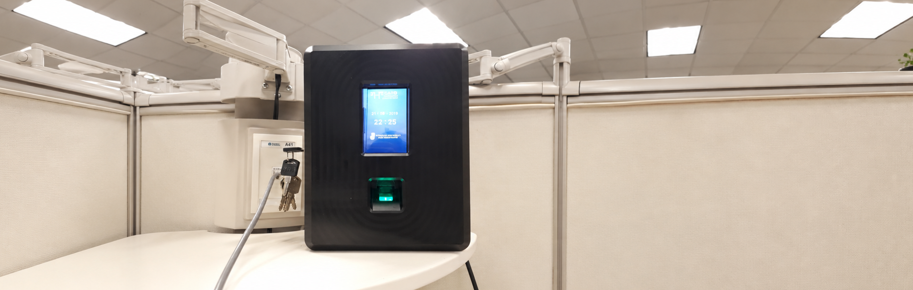
Why this matters
An investor approached us with a frustrating problem: schools in Nayarit, Mexico were trying to introduce attendance enforcement, but every device they installed kept getting destroyed. Conventional plastic-housed fingerprint scanners didn't survive in environments with active labor tensions.
The brief was unusual: design hardware tough enough to outlast the people trying to break it — while still offering full IoT-grade functionality (remote enrollment, real-time alerts, cloud backup, OTA updates). Trihton owned the full physical and firmware side; a separate vendor handled the cloud platform and HR management UI.
How I solved it
The device runs on two ESP32 microcontrollers in parallel: one handles user-facing tasks (touchscreen, fingerprint sensor, local logic), the other handles server communication and connectivity orchestration. This split kept the UX responsive while networking ran in the background — and gave a fallback path if one channel failed.
Connectivity stack with intentional redundancy
| WiFi (802.11n) | Primary cloud sync. |
|---|---|
| Ethernet | Wired fallback for unstable WiFi environments. |
| GPRS / 2G-3G | Last-resort SMS alerts when internet fails. |
| SD card (16 GB) | Local backup of attendance records when all channels fail. |
The system spoke HTTP/JSON with the HR management server — bidirectional sync of users, fingerprints, and attendance logs.
Multi-domain ownership
| PCB design | Mixed-signal board through 13 design iterations. Dual-input power (120/220 VAC mains + UPS battery, 3–4 hr backup); analog signal conditioning for the fingerprint sensor; multi-protocol routing (UART, SPI, I²C) for all peripherals. |
|---|---|
| EMC & form-factor | The stainless-steel enclosure introduced severe RF reflection problems. Routed signals carefully, added shielding strategies, and laid out the board to minimize coupling inside a tightly confined metal cavity. |
| Firmware | C/C++ on dual ESP32 — fingerprint enrollment/matching, touchscreen menu system, multi-channel networking with graceful degradation, SD logging, server sync, tamper alerts, OTA exploration. |
| System integration | Coordinated with mechanical and industrial design colleagues on housing constraints (cable routing, vibration, polycarbonate window, solenoid lock for admin access). |
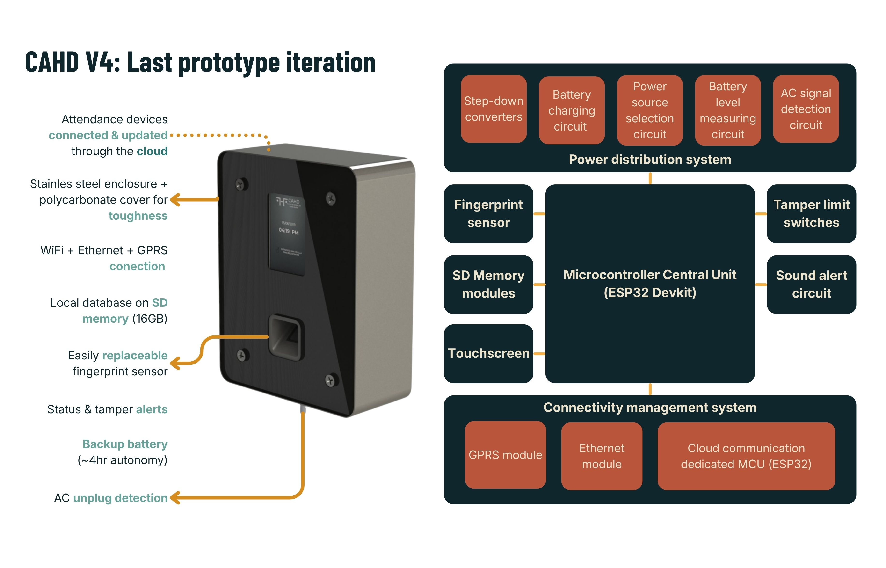
Designed-in for the environment
- Replaceable fingerprint sensor without data loss — the most damage-prone component
- Tamper detection — sensors for enclosure opening, screen access, and power disconnection, with WiFi + SMS alerts
- Separated databases per device — workers can't bypass by using a different terminal
- Differentiated housings — stainless steel for high-vandalism contexts, polycarbonate for normal offices
What it achieved
V4 specs
- 499-user capacity, 998-fingerprint storage, 16 GB internal
- 3.5" touchscreen, replaceable sensor module, IP53 rating
- 120/220 VAC dual operation, 8W consumption (down from 24W)
- WiFi + Ethernet + GPRS with graceful failover, 4-hour battery backup
- Tamper detection with real-time WiFi + SMS alerts
Device in operation — fingerprint check
What remained open
- OTA updates (architecture in place, not fully tested)
- Ethernet reliability needed more field testing
- Investor-requested facial-recognition camera was scoped but never integrated
- Project paused when external funding stalled and the cloud vendor disengaged
What I took from it
CAHD was my first multi-year, multi-iteration hardware product — and it taught me how much real engineering happens in the iterations after something already works. The leap from V3 (functional) to V4 (deployable) involved no new features, only relentless tightening: power budget cut by two-thirds, sensor module made hot-swappable, tamper detection refined, EMC issues hunted down one by one inside a metal cavity that fought me at every revision.
Process & details
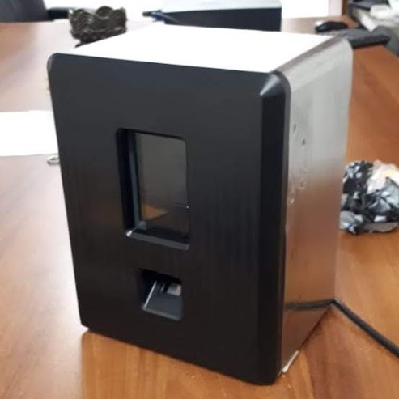
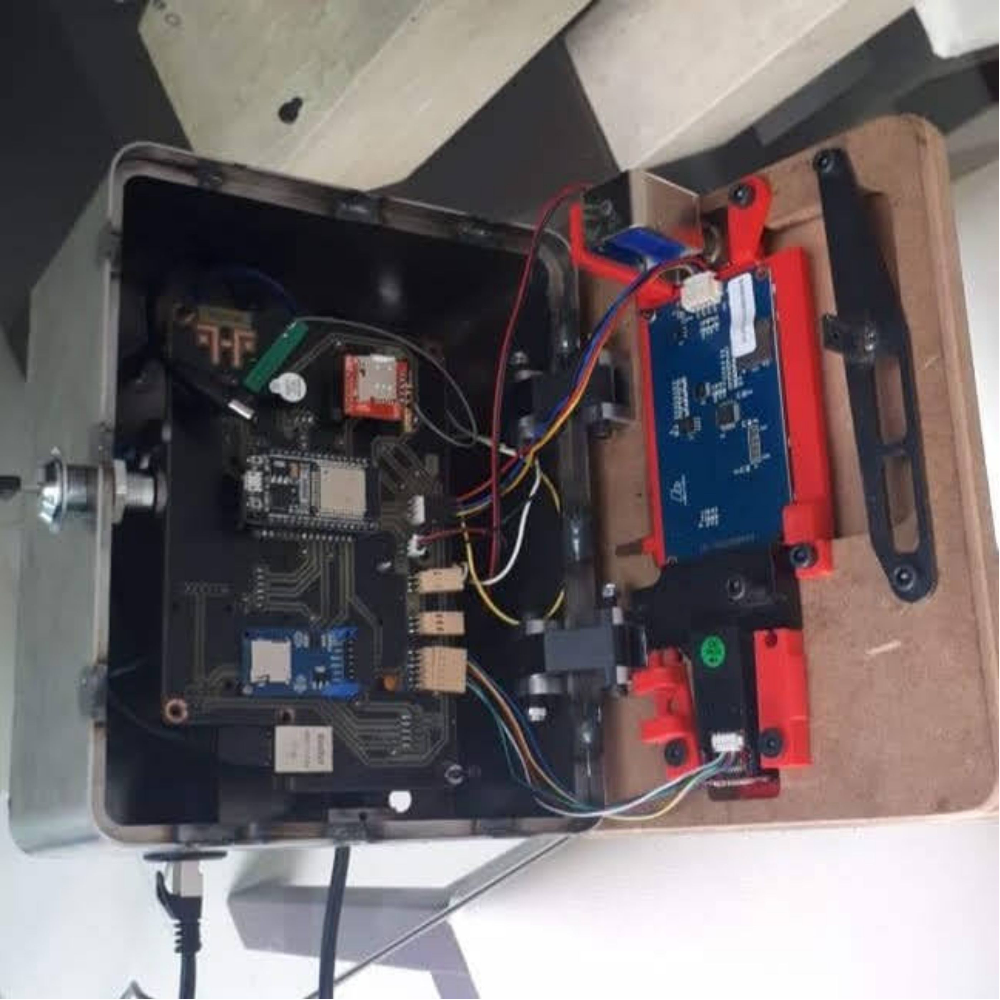
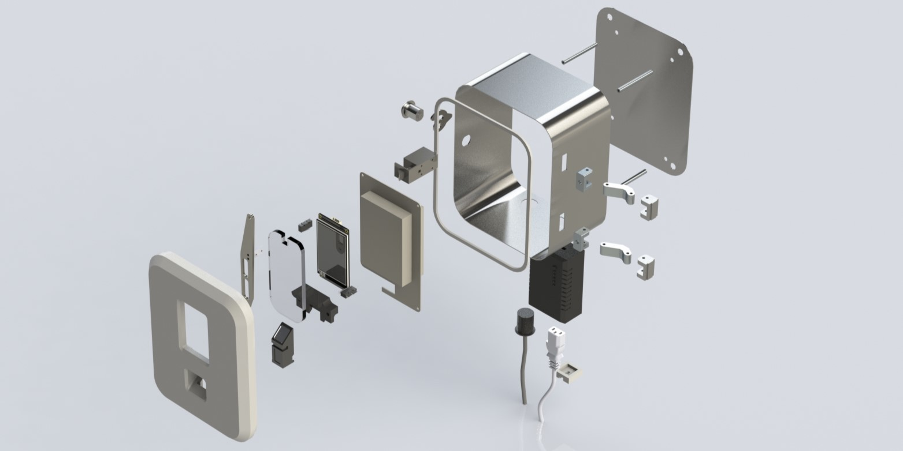
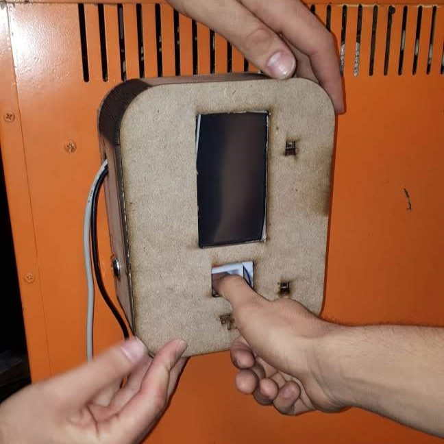
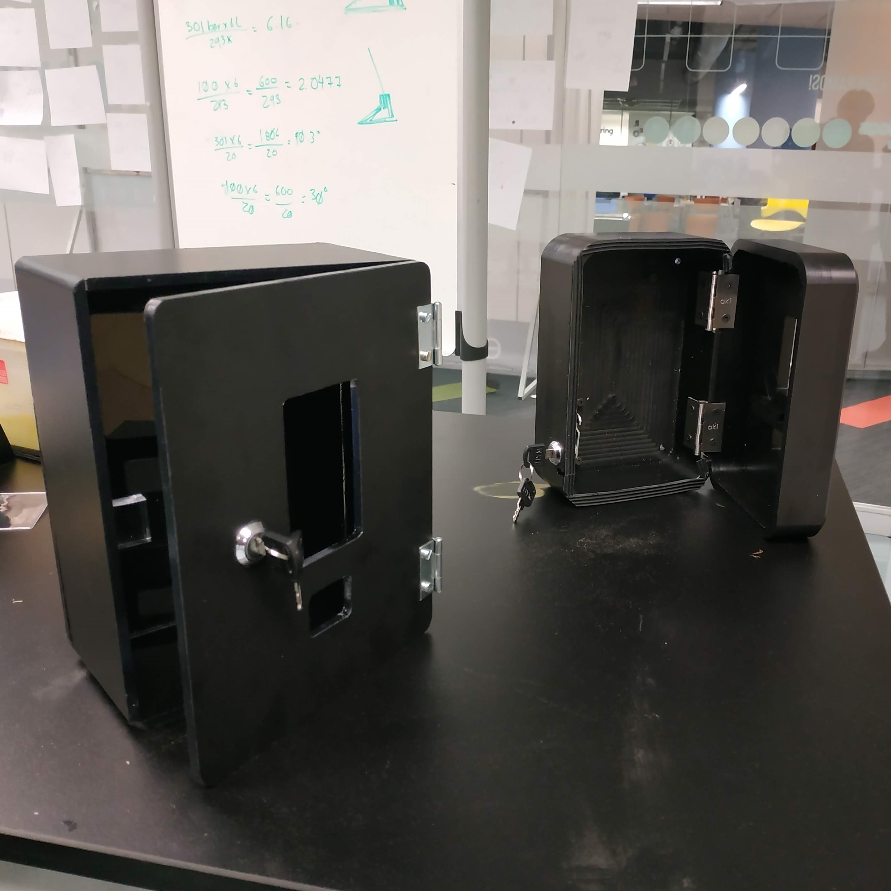
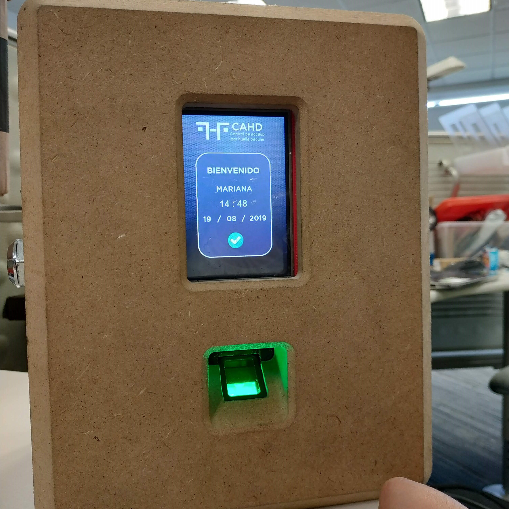
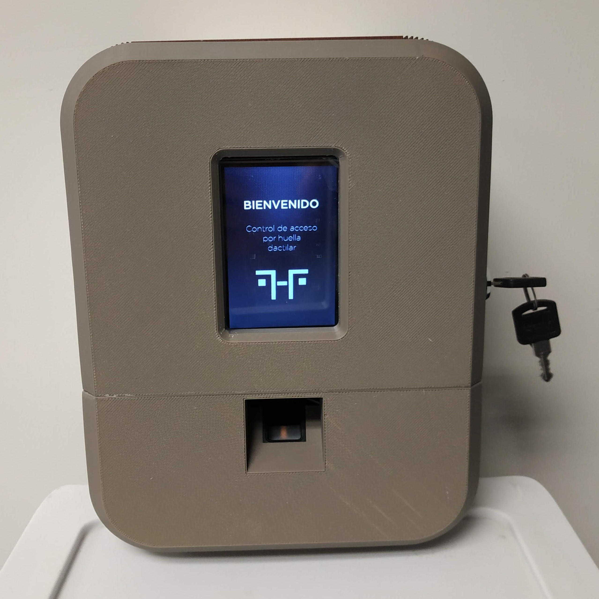
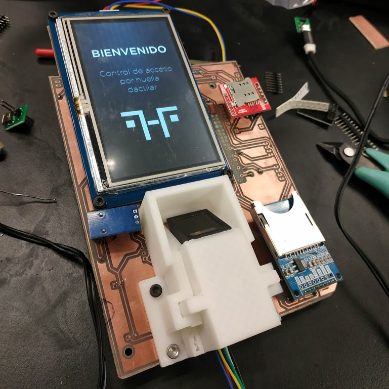
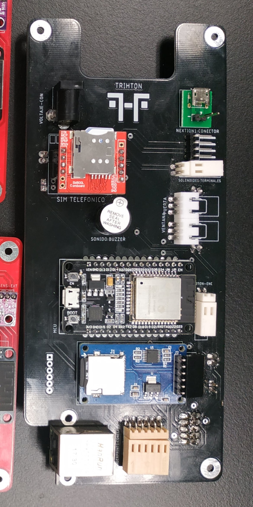
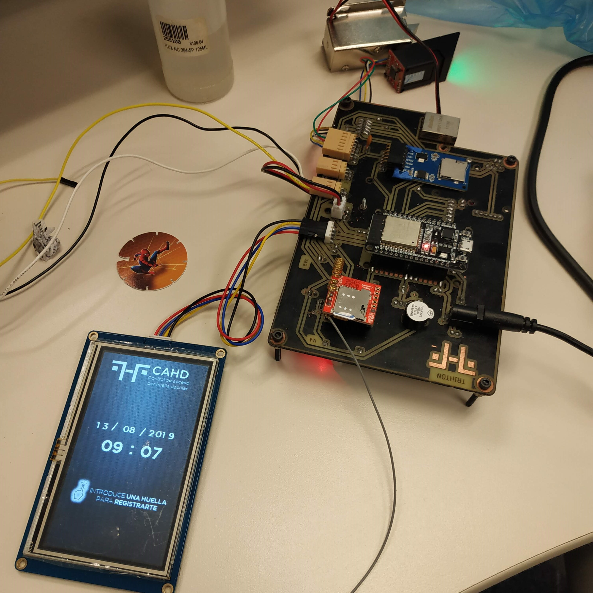